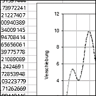

|
Femax
Femax is a component system for structural analysis using the Finite Element Method (FEM).
The system defines interfaces for nodes, degrees of freedom (DOF), matrices, vectors, models and elements.
The Component Object Model (COM) is used for object linking and supports an Automation interface for integration using the Visual Basic for Applications (VBA) environment.
femax.zip - Prototype for Microsoft Windows.
|

|